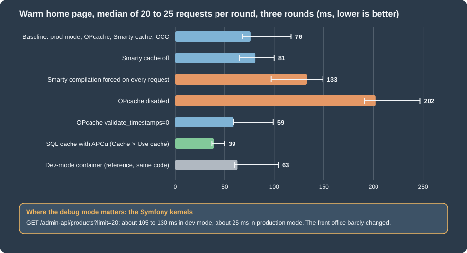

Performance and Caching
|
This content was generated with the assistance of AI and should be verified against the official documentation before being relied on in production. |
This page was written against PrestaShop 9.2.0 (released 2026-09-30, Hummingbird 2.1.2 as the default theme, Smarty 4.5.7, Symfony 6.4.46, PHP 8.5.12 and Apache 2.4.68 in the official Docker image, MySQL 8.4.13) and checked on 2026-10-27. PrestaShop is a self-hosted platform: nobody tunes it for you, so the speed of a shop is the sum of the decisions of whoever hosts it. Most of the settings below exist unchanged in PrestaShop 8.x and 1.7, where the same advice applies; where 9.x differs the page says so.
A PrestaShop request crosses five layers that can each answer from a cache: the browser and any CDN, the web server, PHP, PrestaShop itself and the database. This page goes through them in that order after a section that shows what they are worth, with numbers measured on the Pocket Coffee test shop, and ends with a production checklist. It also sorts out a few statements that the official documentation contradicts itself on (which Smarty setting matters, whether the MySQL query cache exists) and flags advice from older books and posts that no longer applies. It follows the themes page (whose assets the CCC settings combine) and the CLI commands page (which documents the console commands used here), and precedes the Security page.
The running example is Pocket Coffee: a small shop with 19 demo products, two languages and a handful of modules. Its home page, the
Hummingbird theme with the main menu, the featured products and the newsletter block, is the page that every test below requests.
The PHP backing PrestaShop is a monolith with a large number of small PHP files, a legacy front office (controllers, Smarty templates,
ObjectModel) and a Symfony back office and Admin API; the two halves respond to performance settings very differently, as the
measurements show.
What the settings are worth
Measurements
Numbers help only when they come with their method. The test shop ran in two containers of the official image against the same
MySQL database: the shared development container (PS_DEV_MODE=1, port 8080) and a production-mode copy (PS_DEV_MODE=0, on a
copy of the shop’s volume so that changing app/config/parameters.php or the PHP configuration could not affect anybody else). The
home page was requested with curl three times to warm every cache, then 20 to 25 times in a row; the figures are the median of the
total time. Each variation was measured in three rounds that were interleaved (baseline, variation, next variation, …) so that load
on the machine, which was shared with other work, hit all of them alike. The chart shows the median of the three round medians
and, as a thin line, the lowest and the highest round median.

# a production-mode copy of the shop, sharing the database (names and ports are those of the test setup)
docker volume create pcfh-html
docker run --rm -v ec-ps-html:/from:ro -v pcfh-html:/to alpine sh -c 'cp -a /from/. /to/'
docker run -d --name pcfh-prod --network ec-ps --memory 512m -p 8090:80 -v pcfh-html:/var/www/html \
-e PS_INSTALL_AUTO=0 -e DB_SERVER=ec-prestashop-db -e DB_NAME=prestashop -e DB_USER=ps -e DB_PASSWD="${DB_PASSWORD}" \
-e PS_DEV_MODE=0 prestashop/prestashop:9.2.0
# the shop redirects to its canonical host, so send that name in the Host header
for i in 1 2 3; do curl -s -o /dev/null -H 'Host: localhost:8080' http://localhost:8090/; done # warm up
for i in $(seq 1 25); do
curl -s -o /dev/null -w '%{time_total}\n' -H 'Host: localhost:8080' http://localhost:8090/
done | sort -n | awk '{v[NR]=$1} END {printf "median %.0f ms, min %.0f ms\n", v[int(NR/2)+1]*1000, v[1]*1000}'What the measurements say, with the caution that they come from one laptop, one container and one page:
| Variation | Home page, median | Reading |
|---|---|---|
Baseline: production mode, OPcache on, Smarty cache on, CCC on |
76 ms (68 to 117) |
325 SQL statements, 10.7 MB peak memory (from the profiler), 1110 PHP files included. |
OPcache disabled |
202 ms (191 to 247) |
Two and a half to three times slower: every request compiles about 1100 files again. The one setting that must never be off. |
Smarty compilation forced on every request ( |
133 ms (97 to 149) |
About 60 ms of recompilation of the templates (the three rounds gave 21 to 73 ms more than the baseline). A development setting. |
Smarty cache off ( |
81 ms (65 to 100) |
Within the noise on time, but 357 instead of 332 queries per request: the six modules that cache their output ask the database again. |
|
59 ms (59 to 99) |
No difference beyond the noise on this machine (the file system is fast); it matters on network storage and when |
SQL cache in APCu (Advanced Parameters > Performance > Caching) |
39 ms (37 to 50) |
28 statements instead of 325, and 7.5 MB instead of 10.7 MB peak memory: the largest gain of any switch of the Performance page. |
Dev-mode container (reference) |
63 ms (60 to 104) |
The legacy front office is not slower in dev mode on a warm cache; what dev mode adds there is 63 HTML comments, 11 KB of page and a large log. |
Admin API product list, |
about 25 ms in production mode, 105 to 130 ms in dev mode |
The Symfony kernels (back office, API) are where the debug mode costs: four to five times slower. |
The conclusion to carry away: switch the production mode on first, then make sure OPcache works, then use the SQL cache if the catalogue is large, and treat everything else as a smaller gain that is worth measuring on your own pages.
Production mode
The debug mode (_PS_MODE_DEV_) is the biggest single difference between a development and a production shop, even when the
front-office timings above hardly show it. Debug mode:
-
builds the Symfony containers with debugging (
var/cache/devinstead ofvar/cache/prod), registers the profiler and the debug toolbar, and makes the Admin API four to five times slower (measured below) and the back office slower as well; -
displays PHP errors on the page and sets
error_reportingtoE_ALL, with_PS_DEBUG_SQL_true so that SQL errors are printed; -
uses the Smarty class that wraps every template in
<!-- begin ... -->comments (63 of them on the home page, 11 KB more HTML); -
writes a much larger log: after an afternoon of testing,
var/logs/dev-<date>.logwas 124 MB and the production log of the same day 9.7 MB, both growing; -
relaxes the HTTPS rule of the Admin API and exposes the experimental endpoints (see the Admin API page).
Switching it on and off
On a classic host, set the constant in config/defines_custom.inc.php (the back-office switch reads and writes that file first when it is readable, and falls back to config/defines.inc.php):
<?php
define('_PS_MODE_DEV_', false);
define('_PS_DEBUG_PROFILING_', false);The same switches exist in Advanced Parameters > Performance > Debug mode: "Debug mode", an optional debug cookie name and value (so that only a browser that carries the cookie sees the debug mode, which is useful for diagnosing a production issue without exposing errors to every visitor), and "Debug profiler". "Disable all overrides" is in the same panel and turns off every class and controller override at once, which tells you in seconds whether an override is the cause of a problem. The page writes the constant into the defines file, which requires that file to be writable by the web user.
With the Docker image, the variable PS_DEV_MODE decides. The image default is 0; the table in the official Docker page that says
1 is wrong. The value is read with PHP’s (bool) getenv(...), so PS_DEV_MODE=false (a non-empty string) means true: write 0
or leave the variable out. The console command prestashop:debug does not understand this setup (it reported ON in a container
started with PS_DEV_MODE=0 and, when asked to switch off, replaced the environment-driven line with a fixed constant), so on Docker
change the variable of the container, see the CLI commands page.
bin/console about | tail -6 # shows "Debug mode" read from the defines files
curl -s -o /dev/null -w '%{size_download}\n' https://shop.example.test/ # smaller in production mode
curl -s https://shop.example.test/ | grep -c '<!-- begin ' # 0 in production modeSource: PrestaShop devdocs: Docker
The profiler as a measuring tool
The debug profiler (Debug profiler switch, or _PS_DEBUG_PROFILING_) appends a panel to every page with the load time, the query
time, the number of queries, the peak memory, the number of included files, the list of queries with their durations, the tables that
are queried most often, the duplicated queries and the ObjectModel instances. It is the tool for finding a module that costs
hundreds of queries. On the test shop, a cold first request after clearing the cache showed 722 queries, 2061 ms, 2003 included
files and 52.8 MB, and warm requests 325 queries, 58 ms and 1110 files: always measure warm. The panel adds about 3 MB to the
page, so never leave it on for visitors; to profile one request on a production host, use a debug cookie and a short window.
Smarty
PrestaShop 9.2.0 uses Smarty 4.5.7 for the front office and for some back-office legacy pages. Advanced Parameters > Performance >
Smarty has four settings, stored in ps_configuration:
| Setting (key) | Values | Effect |
|---|---|---|
Template compilation ( |
0 Never recompile, 1 Recompile if the files have been updated, 2 Force compilation |
Smarty compiles a |
Cache ( |
on or off |
Enables the caching of module output, not of whole pages. See below. |
Multi-front optimizations ( |
on or off |
Uses a Smarty class that keeps the "flush markers" in the table |
Clear cache ( |
|
|
Which setting matters: the documentation contradicts itself
The page on configuring PrestaShop says the Smarty cache "should always be disabled" and shows $smarty->caching = false in
config/smarty.config.inc.php; the optimisation page says to enable the Smarty cache. Both are true, because they talk about
different things. The configuration file sets Smarty’s own caching to CACHING_OFF for every template, and that is not changed
by any setting, so whole templates are not cached. What the Cache switch (PS_SMARTY_CACHE) controls is the helper
Tools::enableCache(), which a module calls around the part of its code that it wants cached: if the switch is off, the helper does
nothing, and the module renders its block again on each request; if it is on, the helper turns Smarty’s caching on for that
template with a one-year lifetime and a cache id. On the test shop the modules that cache this way were ps_banner, ps_customeraccountlinks, ps_customtext, ps_imageslider,
ps_linklist and ps_socialfollow: each has a directory under var/cache/<env>/smarty/cache.
Modules are free to keep their own caches too. The main menu of the home page is not cached in Smarty: ps_mainmenu stores the menu as a JSON file,
var/cache/<env>/ps_mainmenu/<shop id>/MOD_BLOCKTOPMENU_MENU_JSON_<...>.json. That gave a clear demonstration in the test: a category name
changed directly in the database was shown at once on the category page, but the menu of the home page kept the old name until the cache
was cleared.
UPDATE ps_category_lang SET name = 'ClothesYY' WHERE id_category = 3 AND id_lang = 1; -- run in the mysql client
curl -s https://shop.example.test/ | grep -m1 -o 'Clothes[A-Za-z]*' # Clothes: the menu file is still valid
bin/console cache:clear --env=prod
curl -s https://shop.example.test/ | grep -m1 -o 'Clothes[A-Za-z]*' # ClothesYYbin/console cache:clear --env=prod removed the whole var/cache/prod directory, Smarty compile and cache directories and the
module caches included; after it, the first request recompiled 48 templates and refilled six Smarty cache directories.
Two lessons for the people who manage a shop. Changes made through the back office clear the right caches (the module listens to the
hooks of the data it shows), but changes made by SQL scripts, imports that bypass ObjectModel, or another application are
invisible until the Smarty cache is cleared: add a cache clear to every such job. And a module that caches output without a good
cache id (per language, per currency, per customer group, per shop) can show the wrong content to the wrong visitor; the official
page notes the opposite risk, over-caching, which scatters hundreds of cache files over the disk.
The Smarty directories live in var/cache/<env>/smarty/{compile,cache}. On the test shop the compile directory held 80 files (1.4 MB)
and the cache directory 6 files. PrestaShop 1.6 had a "Cache storage" setting (file system or MySQL) that older books and posts
still describe; it does not exist in 9.2.0 (the form has the four fields above only), so the advice to choose "file system" is moot.
Combine, Compress and Cache (CCC)
CCC is a pair of switches under Advanced Parameters > Performance > CCC (Combine, Compress and Cache): "Smart cache for CSS"
(PS_CSS_THEME_CACHE), "Smart cache for JavaScript" (PS_JS_THEME_CACHE) and "Apache optimization" (PS_HTACCESS_CACHE_CONTROL).
A new 9.x install has the first two on. When they are on, PrestaShop concatenates the stylesheets and scripts that the theme and the
modules register into one CSS file and the JavaScript into bottom-of-page files, names them with a hash of the content, and
writes them to themes/<theme>/assets/cache. A change of content gives a new name, which is what lets the files be cached for a long
time.
bin/console prestashop:config get PS_CSS_THEME_CACHE # 1
curl -s https://shop.example.test/ | grep -oE '(href|src)="[^"]+assets/cache/[^"]+"'
# href="https://shop.example.test/themes/hummingbird/assets/cache/theme-986e33.css"
# src="https://shop.example.test/themes/hummingbird/assets/cache/bottom-30955c.js"
bin/console prestashop:config set PS_CSS_THEME_CACHE --value=0
bin/console prestashop:config set PS_JS_THEME_CACHE --value=0
# the same page now lists 10 stylesheets and 18 scriptsWith CCC on, the home page of the test shop referenced 1 stylesheet and 2 scripts (3 tags); with it off, 10 stylesheets and 18 scripts
(28 tags). The total size was the same order (about 800 KB uncompressed, about 190 KB after gzip), so the gain is the number
of requests, which matters on HTTP/1.1 and on high-latency mobile connections and matters much less with HTTP/2. The core combines the files and minifies them with
the matthiasmullie/minify library (CssMinifier and JsMinifier in classes/assets). Hummingbird’s own build (Node 24 and npm 11 for
the sources of version 2.1.2) already minifies its theme.css (353 KB on a single line), so on this theme CCC mostly concatenates: the
combined CSS of the test shop was 442 KB (84 KB with gzip). The useful pipeline is: build the theme assets minified, let CCC combine, let the
web server compress, let a CDN cache.
"Apache optimization" rewrites the managed block of .htaccess with the expiry, compression and ETag rules (see the web server section).
It has no effect on Nginx. Media servers (Advanced Parameters > Performance > Media servers, Media server #1..#3) are extra domain
names from which the static files are requested, a trick to get more parallel connections on HTTP/1.1; on HTTP/2 and behind a CDN they
add DNS lookups for nothing, so leave them empty and point a single CDN host name at the shop’s static paths instead (see the CDN
section). The setting is only honoured when CCC is off for the file type (the front controller checks Tools::hasMediaServer()
together with the CCC switch).
The SQL cache and cache backends
The panel Advanced Parameters > Performance > Caching turns on a cache for the results of SELECT queries. It is the most effective switch of the page and the most misunderstood.
| Setting | Meaning |
|---|---|
Use cache ( |
Turns the SQL cache on. |
Caching system ( |
|
Servers (table |
For the two Memcached systems: IP, port and weight of each server, added in the same panel. |
Facts about how it works, from the code of 9.2.0 and the tests:
-
The cache is keyed by the query text and invalidated by table: every
INSERT,UPDATE,DELETEor other write that passes throughDb::execute()removes the cached results that involve the written tables. Tables that change on almost every visit are excluded:cart,cart_cart_rule,cart_product,connections,connections_source,connections_page,customer,customer_group,customized_data,guest,pagenotfound,page_viewed,employeeandlog. -
Writes that do not pass through PrestaShop’s
Dbclass, such as an SQL script run in themysqlclient, do not invalidate the cache. APCu is also private to the PHP process pool that owns it: the command line and each FPM pool have separate APCu memory (apc.enable_cliisOff), so abin/consolewrite does not clear the web pool’s APCu cache. Memcached is shared between processes and hosts and does not have this problem. In the two probes made on the test shop (a category name, a product price) the pages showed the new values immediately, because those reads do not go through the SQL cache, so the risk is real in principle but was not reproduced; after a bulk import, flush the cache (Cache::getInstance()->flush()from a script on the web side, or restart PHP-FPM or Apache for APCu). -
The memory is limited (
apc.shm_sizeis 32 MB by default); when the cache is full a store fails and PrestaShop flags that the table cache size needs adjusting. A catalogue with many thousands of products needs a largerapc.shm_size. -
With MySQL 5.7 the server’s own query cache did the same job at the server and the official advice was "do not enable the SQL cache if MySQL is on the same machine". MySQL 8.0 removed the query cache (on the test server,
query_cache_sizedoes not exist), so that advice is obsolete for MySQL 8 and MariaDB deployments of the 9.x era: the SQL cache is again useful on a single server.
Enabling APCu
APCu is not in the official image. The steps below were run on the production-mode copy and the effect is the "SQL cache" row of the measurements (325 statements per home page became 28).
# 1. install and enable the extension (in a Dockerfile, once per image); apc.shm_size stayed at its default of 32M in the test
pecl install apcu
echo "extension=apcu.so" > /usr/local/etc/php/conf.d/docker-php-ext-apcu.ini
# 2. enable the cache and choose APCu: back office (Performance > Caching > Use cache, APC) or edit the file
sed -i "s/'ps_caching' => '[A-Za-z]*'/'ps_caching' => 'CacheApc'/; s/'ps_cache_enable' => false/'ps_cache_enable' => true/" app/config/parameters.php
# 3. rebuild the containers and restart the web server so that every worker loads the extension
bin/console cache:clear --env=prod
apache2ctl -k graceful # or: systemctl reload php8.5-fpmSource: PHP manual: APCu installation
A syntax detail: app/config/parameters.php is generated, not meant for hand edits, but the Performance page writes exactly these keys, so
a scripted edit equals clicking. If the extension is missing when the cache is enabled the shop throws APC cache has been enabled,
but the APC or APCu extension is not available on every request, so add the extension first.
Memcached works the same way with the other two systems and a server list. It was not run (no Memcached in the test environment). Use it
when more than one front-end server must share the cache; place the Memcached server on the private network, never on localhost
of a farm, and never expose its port to the internet.
Symfony cache, containers and logs
var/cache/<env>/<app> holds the compiled Symfony containers, routes, Twig templates and translations of the back office
(admin) and the Admin API (admin-api); the front office has its own container files (FrontContainer*.php) in var/cache/<env>. The
production directory is var/cache/prod, which also receives the cache of console commands run with --env=prod. On the test shop
var/cache/dev was 119 MB and var/cache/prod 98 MB.
bin/console cache:clear --env=prod # about 7 to 9 seconds on the test shop
bin/console cache:clear --env=prod --app-id=admin-api # only the API container
bin/console cache:warmup --env=prod # build the caches before the first visitor does
bin/console cache:pool:clear cache.app # the Symfony application cache pool (not run)Rules: run the commands as the web user (a cache written by root stops the shop from rebuilding it); do not delete var/cache
by hand while requests are served, because the shop recompiles on demand under load; keep var/cache on local disk (a network file
system turns every rebuild into a bottleneck); and include a cache:clear in every deployment that touches code, services, routes or
modules. Clearing the cache does not clear the Smarty compile cache of old template versions in all cases; the back-office
Clear cache button and cache:clear empty it, a plain file copy of the new theme does not.
Rotate the logs. var/logs holds a log per day and environment and PrestaShop does not purge it: the test shop wrote 124 MB in one
afternoon of dev-mode testing. Use logrotate on var/logs/*.log and keep an eye on the ps_log table (see the database section).
PHP
The official image runs PHP 8.5.12 as an Apache module (mod_php, MPM prefork); most production servers use PHP-FPM behind Apache
(MPM event) or Nginx. In both cases the settings below are in php.ini or a file of conf.d.
OPcache
OPcache stores compiled PHP files in shared memory. Without it every request compiles about 1100 files for a front-office page (2000 on the first request after a cache clear): 202 ms instead of 76 ms in the test. It is enabled in the image. The values that the image uses, those that the official page recommends, and what the test showed:
| Directive | Image 9.2.0 | Official page | Notes |
|---|---|---|---|
|
1 |
1 |
Must be on. |
|
256 (MB) |
256 |
After requests to three front pages, 1225 scripts used 44.9 MB and 211 MB was free; the back office and the API need more.
Watch |
|
16 (MB) |
32 |
12.4 MB of 16 was used after three front pages, so 16 is tight once modules and the back office are loaded: use 32. |
|
20000 |
16229 |
The shop with its modules is far below that; raise it only if |
|
1 (with |
1 with |
With 0, PHP never looks at a file again: deploy by reloading PHP or calling |
|
0 |
0 |
Leave at 0. |
|
not set |
10, 0, 0 |
Set only if you have measured a reason. |
|
absent |
1 |
The official page still lists it. It was removed in PHP 7.2 and does not exist in PHP 8.5; an |
|
|
not mentioned |
The JIT with |
<?php
// pcfh-opcache.php: drop in the web root of a test copy, call it once, delete it. Never leave it on a public shop.
header('Content-Type: application/json');
$s = opcache_get_status(false);
echo json_encode([
'enabled' => $s['opcache_enabled'],
'cached_scripts' => $s['opcache_statistics']['num_cached_scripts'],
'hits' => $s['opcache_statistics']['hits'],
'misses' => $s['opcache_statistics']['misses'],
'used_mb' => round($s['memory_usage']['used_memory'] / 1048576, 1),
'free_mb' => round($s['memory_usage']['free_memory'] / 1048576, 1),
'interned_used_mb' => round($s['interned_strings_usage']['used_memory'] / 1048576, 1),
'interned_free_mb' => round($s['interned_strings_usage']['free_memory'] / 1048576, 1),
]);
// {"enabled":true,"cached_scripts":1225,"hits":2254,"misses":1308,"used_mb":44.9,"free_mb":211.1,
// "interned_used_mb":12.4,"interned_free_mb":3.6}Source: PHP manual: OPcache
The status function describes the OPcache of the process that answers, so it has to be called through the web server; run on the command line
it describes a different cache (or none). opcache.validate_timestamps=0 and every cache of var/cache mean that a new version of
a module is invisible until the deployment reloads PHP and clears the caches: both belong in the deployment script.
Other PHP settings
-
realpath_cache_size=4096Kandrealpath_cache_ttl=600(the image already sets them) avoid thousands oflstatcalls. They are not compatible withopen_basedirand are particularly valuable on network storage. -
memory_limitis 512M in the image,max_execution_timeis 0 (unlimited),upload_max_filesizeandpost_max_size20M. The official page recommendsmemory_limit=512M,max_execution_time=300,post_max_size=22Mandmax_input_vars=20000for products with many combinations. Set an execution time limit for web requests in production. -
zend.assertionsis1in the image, a development default: assertion calls are evaluated and can raise. Production should use-1(compiled out). -
display_errors=Offandexpose_php=Offare already set in the image. -
Run a supported PHP version: PrestaShop 9.2 supports PHP 8.1 to 8.5, the official image runs 8.5, and security support for PHP 8.2 ends on 2026-12-31 (8.1 already ended on 2025-12-31). A newer PHP is also faster.
-
Composer:
composer dump-autoload --optimize --no-dev --classmap-authoritativebuilds a class map that avoids file-system lookups, as the official page suggests. An authoritative class map ignores classes that are not listed, so a module installed afterwards is unknown until the command is run again (in the module’s own folder for itsvendor/): run it as the last step of a deployment.
PHP-FPM
For FPM, set pm.max_children high enough for the peak number of concurrent requests that you expect, and small enough that the workers fit in
memory (measure it: the peak of the home page was 10.7 MB per request, the back office needs far more), pm = dynamic or ondemand
according to traffic, and pm.max_requests to recycle workers. The official page gives the Apache event
MPM example ServerLimit 16, MaxRequestWorkers 400. The image of the test shop uses mod_php with prefork, where each Apache child
embeds PHP; do not copy FPM numbers into it.
Web server
Apache
The image has deflate, headers and rewrite loaded and no expires. The .htaccess that PrestaShop writes contains an
<IfModule mod_expires.c> block with expiry times (images one month, CSS and JavaScript one week, fonts and SVG one year) and an
<IfModule mod_deflate.c> block. Because <IfModule> ignores a block when the module is absent, the "Apache optimization" switch
silently did nothing in the Docker image: the CSS file was answered with Last-Modified and no Cache-Control or Expires, so a browser
could only revalidate it. Enabling the module fixed it:
# before: curl -I .../themes/hummingbird/assets/cache/theme-986e33.css -> Last-Modified only
a2enmod expires && apache2ctl -k graceful
curl -sI https://shop.example.test/themes/hummingbird/assets/cache/theme-986e33.css | grep -iE '^(cache-control|expires)'
# Cache-Control: max-age=604800
# Expires: Tue, 03 Nov 2026 16:00:37 GMT
curl -sI https://shop.example.test/img/logo.png | grep -iE '^(cache-control|expires)'
# Cache-Control: max-age=2592000 (one month)Compression was on already: the home page was 133 KB identity and 15 KB with gzip, the combined CSS 440 KB and 84 KB. Other Apache
settings: the official page offers Header set Cache-Control "max-age=2592000, public" for images, CSS and fonts as a mod_headers alternative to
mod_expires, and FileETag none is already in the generated block. Standard Apache practice, not part of the PrestaShop page and not
run here, adds HTTP/2 (Protocols h2 http/1.1, which needs the event or worker MPM with PHP-FPM, not prefork with mod_php), KeepAlive On, and
moving the .htaccess rules into the virtual host with AllowOverride None, which saves a file look-up in every directory of every request. The HTML of the shop is sent with Cache-Control: no-store, no-cache, must-revalidate
and an old Expires, which is right: do not try to cache the dynamic pages in a CDN without a very careful design (cart and customer
cookies make a page personal).
Nginx
Nginx has no .htaccess, so the Apache optimization switch is irrelevant and the equivalents belong in the server block. The official
page gives compression and expiry rules, adapted here (the type list is shortened and webp and avif were added to the expiry
pattern); they were not run:
server {
gzip on;
gzip_vary on;
gzip_proxied any;
gzip_comp_level 6;
gzip_min_length 1000;
gzip_types application/javascript application/json application/manifest+json application/xml font/ttf font/otf
image/svg+xml text/css text/javascript text/plain text/xml;
location ~* \.(?:css|eot|gif|ico|jpe?g|otf|png|ttf|webp|avif|woff2?)$ {
expires 1M;
add_header Cache-Control "public";
}
location = /favicon.ico { access_log off; log_not_found off; }
location = /robots.txt { access_log off; log_not_found off; }
}The official text warns about compression over TLS (BREACH). Mitigate it by not compressing responses that reflect a secret (the shop’s
HTML includes CSRF tokens in forms), or accept it with the usual protections. Buffer the access log
(access_log ... buffer=32k flush=5s) or switch it off for static files. With Nginx in front of PHP-FPM, the deny rules that
.htaccess provides (see the Security page) must be reproduced in location blocks.
CDN, images and media
A CDN caches the static files at the edge and so removes most of the hits on the server. Rules that work for PrestaShop:
-
Cache only static paths (
/themes/*/assets/,/modules/*/views/,/img/,/js/,/css/). CCC files carry a content hash in the name, so they can be cached for a year and need no purge when the shop changes them; product images change on upload and need a purge or a version string. -
Never cache the HTML, the back office (
/<admin folder>/),/admin-api/,/api/or any URL with a cart or customer cookie. -
Point the shop at the CDN host with the theme’s asset URLs or with a reverse proxy; PrestaShop’s Media servers settings are the legacy way (see the CCC section) and are not needed with a CDN that serves the whole domain.
-
After purging a CDN, expect a burst of requests to the origin; warm the main pages.
-
With several web nodes the images and the cache backend must be shared too; see Cloud: Shared Media and Files and Cloud: Cache, Sessions and Back Office.
-
A CDN does not replace compression and expiry at the origin: some clients bypass it.
Images are most of the bytes of a catalogue page. Design > Image Settings defines the sizes of each image type, the quality
(PS_JPEG_QUALITY 90, PS_PNG_QUALITY 7, PS_WEBP_QUALITY 80, PS_AVIF_QUALITY 90 on the test shop) and the formats to generate
(PS_IMAGE_FORMAT, a comma separated list that always starts with jpg and may add png, webp and avif). Each extra format
multiplies the number of files; WebP is supported by the GD of the image, AVIF is not (the AVIF option needs a GD build with AVIF and the
core checks for it), so on the test shop only JPEG and WebP could be produced. After changing the sizes or formats,
regenerate the thumbnails (and do it off peak):
bin/console prestashop:config get PS_IMAGE_FORMAT
bin/console prestashop:thumbnails:regenerate products --env=prod # all image types, all products; minutes for a large catalogue
bin/console prestashop:thumbnails:regenerate stores # ran in 1 or 2 seconds on the test shopUpload product photos at the size the theme needs (for example 1000 x 1000 pixels for the coffee bags of Pocket Coffee), not at camera resolution; PrestaShop stores the original and derives the thumbnails from it. See the pages on media optimization for the general techniques (formats, responsive images, lazy loading) that apply to a PrestaShop theme.
The database
MySQL 8.4 is the tested database (MariaDB 10.2 and later are also supported). Things that matter, in order:
-
innodb_buffer_pool_size: the memory for table and index data. The test container uses the default of 128 MB, which suffices for a 12 MB shop; a real shop should set it to a value larger than the database size, as long as the server has the memory, because every read that misses the pool goes to disk. -
The old
query_cache_*settings that the official page still lists do not exist in MySQL 8 (the server variablequery_cache_sizeis not defined on the 8.4.13 test server); skip them.table_open_cache(4000 here) andthread_cache_size(9 here) can be raised for busy shops,performance_schemaoff saves memory on small servers, andinnodb_flush_log_at_trx_commit=1(the default) is the safe value that costs write speed. -
Turn on the slow query log (
slow_query_log=1,long_query_time=0.5) for a day and read it withpt-query-digestormysqldumpslow: the slow queries of a PrestaShop shop are almost always caused by one module. -
Run
ANALYZE TABLEafter a bulk import so that the optimizer has current statistics. -
ps_configurationis loaded on every request: the test shop has 530 rows; stray rows left by uninstalled modules add up in a shop that has lived for years. List them withSELECT name FROM ps_configuration ORDER BY nameand remove what belongs to modules that no longer exist. -
Read replicas are a legitimate scale-out for the read-heavy front office, but PrestaShop has no built-in read/write split; it needs a proxy or a custom
Dbimplementation. A managed database on RDS or Aurora, and what the core can and cannot ask of it, is in Cloud: Managed Database (RDS and Aurora).
Tables that grow
The official page "Taking care of your PrestaShop" lists tables that grow with traffic: the logs (ps_log), the visit tracking
(ps_connections, ps_connections_source, ps_connections_page, ps_guest, ps_page_viewed), the 404 page log (ps_pagenotfound),
the search statistics (ps_statssearch), old abandoned carts (ps_cart and ps_cart_product) and, in some shops, ps_mail and the
search index. On the test shop ps_connections, ps_connections_source and ps_guest already had about 700 rows after a day of tests,
one row per visitor session, which at a few thousand visitors a day means millions of rows in a year. A purge such as this one
(wrapped in a transaction and rolled back on the test shop to check the syntax; it removed nothing there because every row was recent)
belongs to a scheduled job that runs off peak:
START TRANSACTION;
DELETE FROM ps_log WHERE date_add < DATE_SUB(NOW(), INTERVAL 90 DAY);
DELETE FROM ps_connections WHERE date_add < DATE_SUB(NOW(), INTERVAL 30 DAY);
DELETE FROM ps_connections_source WHERE date_add < DATE_SUB(NOW(), INTERVAL 30 DAY);
-- check the numbers before committing
SELECT ROW_COUNT();
ROLLBACK; -- replace by COMMIT once the numbers are what you expectKeep a backup first, delete in batches (LIMIT 10000 in a loop) on large tables so as not to hold locks for minutes, and check that no
module’s reports depend on the rows you purge: the statistics modules read ps_connections and ps_guest, so their old figures
will go with them. For ps_guest remove only guests without a customer account. The statistics modules themselves are a performance
choice: each page view writes rows, and a shop that uses Google Analytics or another external tool can disable the internal ones.
Modules, themes and overrides
Most "PrestaShop is slow" cases end in a module. Method:
-
Measure with the profiler on a warm page and note the number of queries and the load time.
-
Disable the suspects one at a time (
bin/console prestashop:module disable <name>, thencache:clear) and measure again, or switch on Disable all overrides to rule out the overrides. -
Look at the hooks the module uses: a module hooked on every page (
displayHeader,displayFooter) that runs queries or loads scripts costs on every request; a module that only needs one page should register its hook for that page. -
Check the module’s output caching (see Smarty): a module that is expensive and caches nothing is a candidate for a cache with a good cache id, one that caches without an id is a candidate for a bug.
Hummingbird ships assets built with modern tooling (the page above requested 3 asset files with CCC), but any theme can be undone by
dozens of stylesheets and scripts, large uncompressed images and a dozen third-party tags (analytics, chat, pixels). Measure with Lighthouse or WebPageTest on a mobile profile, not only with the
server timings of this page. Overrides in override/ slow the class loader slightly and, more importantly, make updates risky; keep them rare.
The back office and the Admin API
The back office and the Admin API run on Symfony kernels, and they are what production mode helps most (the API list answered in about 25 ms instead of 105 to 130 ms). Other measures for the back office:
-
In Advanced Parameters > Performance > Optional features, "Combinations", "Features" and "Customer groups" can be switched off if the shop does not use them (not Pocket Coffee, which has 18 combinations per product, a feature for the origin and a coffee-club customer group); each removes queries and form fields. The page refuses to disable combinations while any product uses them.
-
Thumbnail generation and search indexing are long jobs: run them from the console (
prestashop:thumbnails:regenerate,prestashop:search:index) at night, not in a browser request. -
The product search index (
ps_search_index, 789 rows here) must be kept current;prestashop:search:index -p <id>after a bulk import, and--fullafter a large change, instead of on each visitor’s first search. -
The Admin API is stateless and cheap per request in production mode; the cost is in the CQRS handler. Page through large lists with
limitandoffsetand ask for the narrowest scopes.
Legacy advice that no longer applies
Books and posts written for PrestaShop 1.5 and 1.6 describe settings that changed or disappeared. Checked against 9.2.0:
| Older advice | State in 9.2.0 |
|---|---|
Choose the Smarty "Cache storage": file system or MySQL |
No such setting; the Smarty cache is always on the file system under |
Enable XCache or APC for the SQL cache |
APCu works; XCache is still in the form but the extension is unmaintained and not a sensible choice for current PHP. |
Turn the MySQL query cache on ( |
Removed in MySQL 8.0; an unknown |
Minify CSS and JavaScript with CCC |
CCC combines, minifies ( |
|
Removed in PHP 7.2. |
Serve images from several media servers for parallel downloads |
Counter-productive with HTTP/2 and a CDN. |
Use a core override to speed up a class |
Overrides are discouraged and risky on update; prefer a module or a service decoration. |
Put the shop on a local XAMPP or MAMP stack for production |
Never; use a real server stack with PHP-FPM or the official image. |
Production checklist
| Check | How |
|---|---|
Production mode on, profiler off, no debug cookie left |
|
OPcache on, enough memory, |
|
Smarty compile 0 (or 1 during a release), Smarty cache on, clear cache |
Performance > Smarty; |
CCC on for CSS and JavaScript |
|
Expiry headers and compression on static files |
|
SQL cache with APCu or Memcached for a large catalogue |
Performance > Caching; measured gain on the profiler’s query count. |
|
|
Logs and tables that grow are purged or rotated |
|
Deployment script clears caches and reloads PHP |
|
CDN in front of static paths only |
No HTML, back office or API cached; hashed CCC names cached for a long time. |
A measurement before and after every change |
The method of the first section, on the pages that matter to your visitors. |
What was run and what was not
On a local PrestaShop 9.2.0 shop (official Docker image, MySQL 8.4, PHP 8.5.12, Apache 2.4.68 with mod_php and the prefork MPM) the following ran and
produced the figures above: the home page timing in a development-mode container and in a production-mode copy of the shop on the same
database, with interleaved rounds for the baseline, OPcache off, OPcache validate_timestamps=0, OPcache JIT, Smarty compilation modes 0, 1 and 2, Smarty cache on and off, CCC on and off (asset tag
counts and bytes), the SQL cache with APCu (installed with pecl), the profiler output (query counts, memory, included files), OPcache status
through the web server, the static headers with and without mod_expires, the compression sizes, the Admin API product list in both modes, the
prestashop:debug behaviour in a copy, cache:clear timings, the size of logs and caches, the table purge inside a rolled-back transaction, and the
configuration values read with prestashop:config. Every configuration value and file that was changed on the shared shop was restored
(Smarty compile mode and cache, CCC switches, a category name and a product price touched for the stale-output tests); the production-mode copy
and its volume were removed after the run.
Not run: Memcached and Memcache, XCache, Nginx and PHP-FPM (the image is Apache with mod_php), HTTP/2, a CDN, multiple front servers with
Multi-front optimizations, a large catalogue (19 demo products and about 700 sessions only), AVIF generation (the image’s GD has no AVIF support),
the full thumbnail regeneration of a catalogue, MariaDB, and any measurement of the back-office pages (they need a logged-in employee; only the
Admin API list was timed). The timings are indicative: they come from a shared laptop and show orders of magnitude, not guarantees.